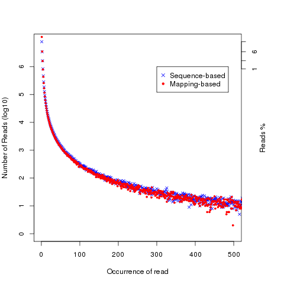
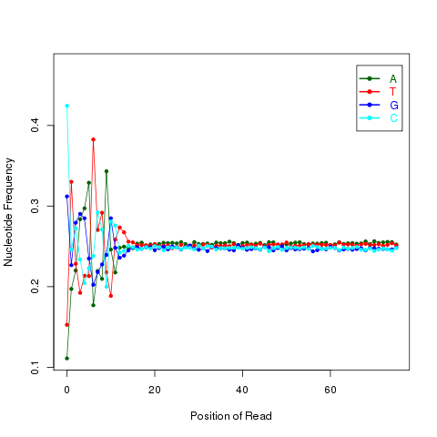
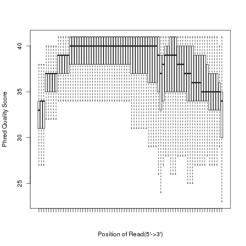
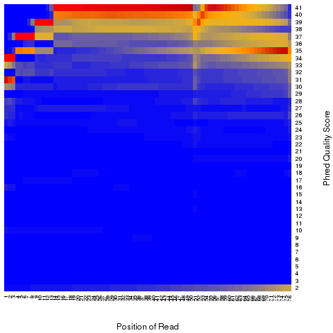
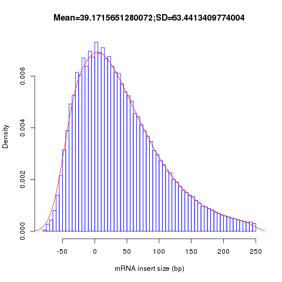
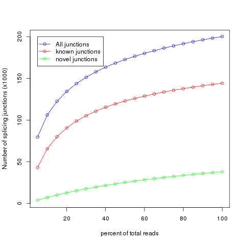

SRR821282 RNA-seq Quality Control
Deep transcriptome sequencing (RNA-seq) provides massive and valuable information about functional elements in the genome. Ideally, transcriptome sequencing should be able to directly identify and quantify all RNA species, small or large, low or high abundance. However, RNA-seq is a complicated, multistep process involving sample preparation, amplification, fragmentation, purification and sequencing. A single improper operation would result in biased or even unusable data. Therefore, it is always a good practice to check the quality of your RNA-seq data before analyses.
QC matrix
Read Mapping Statistics
The sample is sequenced as non-stranded RNA-seq
#================================================== #All numbers are READ count #================================================== Total records: 64318832 QC failed: 0 Optical/PCR duplicate: 0 Non primary hits 3373502 Unmapped reads: 0 mapq < mapq_cut (non-unique): 2341370 mapq >= mapq_cut (unique): 58603960 Read-1: 29301980 Read-2: 29301980 Reads map to '+': 29301980 Reads map to '-': 29301980 Non-splice reads: 50780906 Splice reads: 7823054 Reads mapped in proper pairs: 58603960 Proper-paired reads map to different chrom:0
read_distribution
Provided a BAM/SAM file and reference gene model, this module will calculate how mapped reads were distributed over genome feature (like CDS exon, 5’UTR exon, 3’ UTR exon, Intron, Intergenic regions). When genome features are overlapped (e.g. a region could be annotated as both exon and intron by two different transcripts) , they are prioritize as: CDS exons > UTR exons > Introns > Intergenic regions, for example, if a read was mapped to both CDS exon and intron, it will be assigned to CDS exons.
- “Total Reads”: This does NOT include those QC fail,duplicate and non-primary hit reads
- “Total Tags”: reads spliced once will be counted as 2 tags, reads spliced twice will be counted as 3 tags, etc. And because of this, “Total Tags” >= “Total Reads”
- “Total Assigned Tags”: number of tags that can be unambiguously assigned the 10 groups (see below table).
- Tags assigned to “TSS_up_1kb” were also assigned to “TSS_up_5kb” and “TSS_up_10kb”, tags assigned to “TSS_up_5kb” were also assigned to “TSS_up_10kb”. Therefore, “Total Assigned Tags” = CDS_Exons + 5’UTR_Exons + 3’UTR_Exons + Introns + TSS_up_10kb + TES_down_10kb.
- When assign tags to genome features, each tag is represented by its middle point.
RSeQC cannot assign those reads that:
- hit to intergenic regions that beyond region starting from TSS upstream 10Kb to TES downstream 10Kb.
- hit to regions covered by both 5’UTR and 3’ UTR. This is possible when two head-to-tail transcripts are overlapped in UTR regions.
- hit to regions covered by both TSS upstream 10Kb and TES downstream 10Kb.
processing /hpc/grid/shared/ngsdb/annotation/ensembl/hg19_Ensembl.bed ... Done Total Reads 60945330 Total Tags 69758397 Total Assigned Tags 65521867 ===================================================================== Group Total_bases Tag_count Tags/Kb CDS_Exons 36860499 39087985 1060.43 5'UTR_Exons 35730397 2669265 74.71 3'UTR_Exons 57806939 16878612 291.98 Introns 1453670930 6164373 4.24 TSS_up_1kb 31788498 37167 1.17 TSS_up_5kb 141452483 101542 0.72 TSS_up_10kb 252939815 144231 0.57 TES_down_1kb 33557126 218634 6.52 TES_down_5kb 145246303 498178 3.43 TES_down_10kb 255858394 577401 2.26 =====================================================================
read_duplication
Two strategies were used to determine reads duplication rate: * Sequence based: reads with exactly the same sequence content are regarded as duplicated reads. * Mapping based: reads mapped to the same genomic location are regarded as duplicated reads. For splice reads, reads mapped to the same starting position and splice the same way are regarded as duplicated reads.
{kind=link}
{kind=link}
read_NVC
This module is used to check the nucleotide composition bias. In ideal condition (genome is random and RNA-seq reads is randomly sampled from genome), we expect A%=C%=G%=T%=25% at each position of reads. It is perfectly normal to observe both a slight GC bias and a distinctly non-random base composition over the first 12 bases of the data. This is observed when looking, for instance, at the IVC (intensity versus cycle number) plots which are part of the output of the Pipeline. In genomic DNA sequencing, the base composition is usually quite uniform across all bases; but in mRNA-Seq, the base composition is noticeably uneven across the first 10 to 12 bases. Illumina believes this effect is caused by the "not so random" nature of the random priming process used in the protocol. This may explain why there is a slight overall G/C bias in the starting positions of each read. The first 12 bases probably represent the sites that were being primed by the hexamers used in the random priming process. The first twelve bases in the random priming full-length cDNA sequencing protocol (mRNA-seq) always have IVC plots that look like what has been described. This is because the random priming is not truly random and the first twelve bases (the length of two hexamers) are biased towards sequences that prime more efficiently.This is entirely normal and expected. This bias could be easily examined by NVC (Nucleotide versus cycle) plot. NVC plot is generated by overlaying all reads together, then calculating nucleotide composition for each position of read (or each sequencing cycle).
NOTE: this program expect a fixed read length
{kind=link}
read_quality
According to SAM specification, if Q is the character to represent “base calling quality” in SAM file, then Phred Quality Score = ord(Q) - 33. Here ord() is python function that returns an integer representing the Unicode code point of the character when the argument is a unicode object, for example, ord(‘a’) returns 97. Phred quality score is widely used to measure “reliability” of base-calling, for example, phred quality score of 20 means there is 1/100 chance that the base-calling is wrong, phred quality score of 30 means there is 1/1000 chance that the base-calling is wrong. In general: Phred quality score = -10xlog(10)P, here P is probability that base-calling is wrong.
 {kind=link}
{kind=link}
Heatmap: use different color to represent nucleotide density (“blue”=low density,”orange”=median density,”red”=high density”)
geneBody_coverage
Read coverage over gene body. This module is used to check if reads coverage is uniform and if there is any 5’/3’ bias. This module scales all transcripts to 100 nt and calculates the number of reads covering each nucleotide position. Finally, it generates a plot illustrating the coverage profile along the gene body.

inner_distance
This module is used to calculate the inner distance (or insert size) between two paired RNA reads. The distance is the mRNA length between two paired fragments. We first determine the genomic (DNA) size between two paired reads: D_size = read2_start - read1_end, then
- if two paired reads map to the same exon: inner distance = D_size
- if two paired reads map to different exons:inner distance = D_size - intron_size
- if two paired reads map non-exonic region (such as intron and intergenic region): inner distance = D_size
- The inner_distance might be a negative value if two fragments were overlapped.
NOTE: Not all read pairs were used to estimate the inner distance distribution. Those low quality, PCR duplication, multiple mapped reads were skipped.
{kind=link}
junction_annotation
This program will compare detected splice junctions to reference gene model. splicing annotation is performed in two levels: splice event level and splice junction level.
- splice event: An RNA read, especially long read, can be spliced 2 or more times, each time is called a splicing event; In this sense, 100 spliced reads can produce >= 100 splicing events.
- splice junction: multiple splicing events spanning the same intron can be consolidated into one splicing junction.
All detected junctions can be grouped to 3 exclusive categories:
- Annotated: The junction is part of the gene model. Both splice sites, 5’ splice site (5’SS) and 3’splice site (3’SS) can be annotated by reference gene model.
- complete_novel: Complete new junction. Neither of the two splice sites cannot be annotated by gene model
- partial_novel: One of the splice site (5’SS or 3’SS) is new, while the other splice site is annotated (known)
{kind=link}
{kind=link}
junction_saturation
It’s very important to check if current sequencing depth is deep enough to perform alternative splicing analyses. For a well annotated organism, the number of expressed genes in particular tissue is almost fixed so the number of splice junctions is also fixed. The fixed splice junctions can be predetermined from reference gene model. All (annotated) splice junctions should be rediscovered from a saturated RNA-seq data, otherwise, downstream alternative splicing analysis is problematic because low abundance splice junctions are missing. This module checks for saturation by resampling 5%, 10%, 15%, ..., 95% of total alignments from BAM or SAM file, and then detects splice junctions from each subset and compares them to reference gene model.
{kind=link}
Citation
Wang L, Wang S, Li W* RSeQC: quality control of RNA-seq experiments Bioinformatics (2012) 28 (16): 2184-2185. doi: 10.1093/bioinformatics/bts356 pubmed